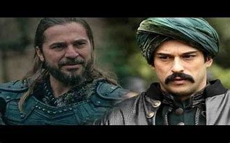
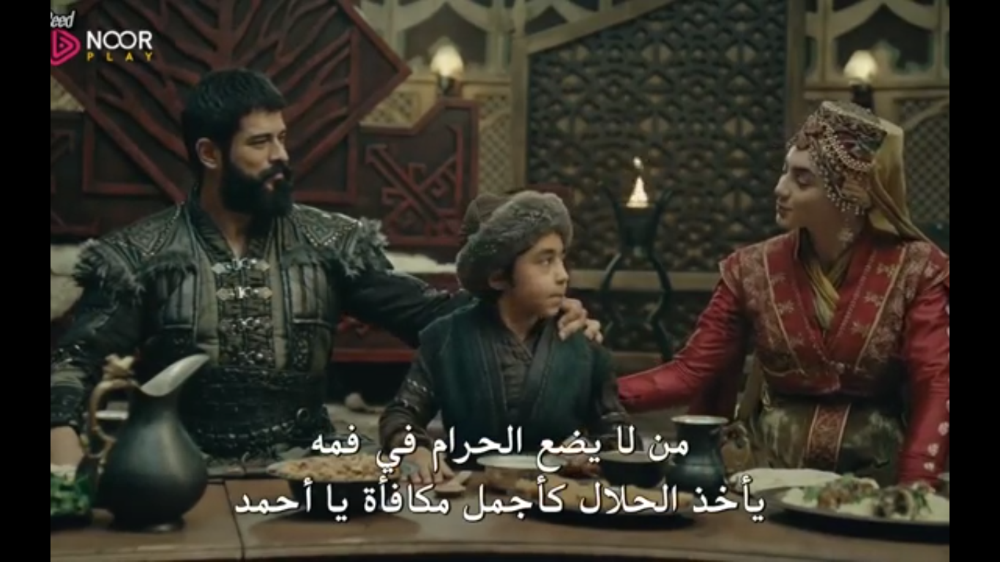

Resurrection of othman Founder
The Founder Osman is a historical Turkish drama series, which began airing on November 20, 2019, telling the story of the invader Osman bin Ertugrul, founder of the Ottoman Empire, starring actor Burak Özçevit, actress Yildiz Cagary Atiqoy, Özge Turer, Burak Çelik, Serhat Kilic, and Erkan Avci. It is shown on the Turkish channel ITV weekly every Wednesday at eight pm Turkish time, and is a sequel to the historical series Resurrection of Ertugrul. The series revolves around the invader Osman I, the founder of the Ottoman Empire, and about the establishment of the state and its transfer from poverty and loss to strength and solidity by Osman, the third and youngest son of Ertugrul, succeeds his father after his death, and follows in his footsteps to achieve great victories, and establish the Ottoman Empire. The series also presents the conflicts between the Ottoman Empire, the Mongols, the Tatars, the Crusaders, the Persians and the Romans, the challenges facing Osman in order to establish his state, especially with the members of his tribe, and his dispute with his uncle Dündar.
 